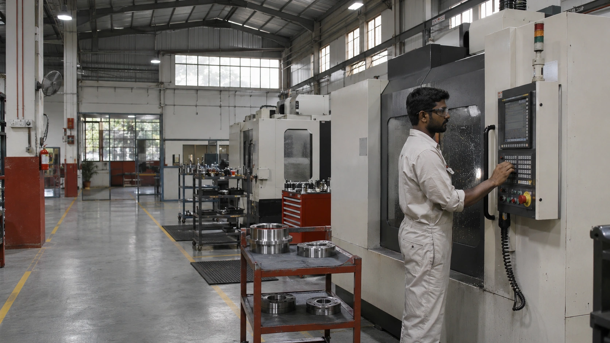
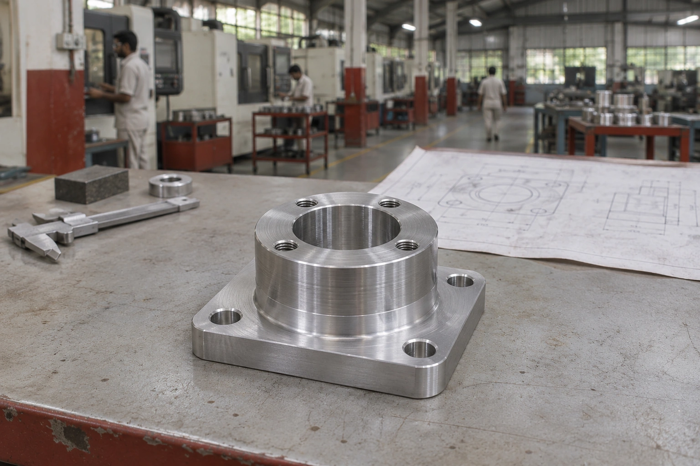
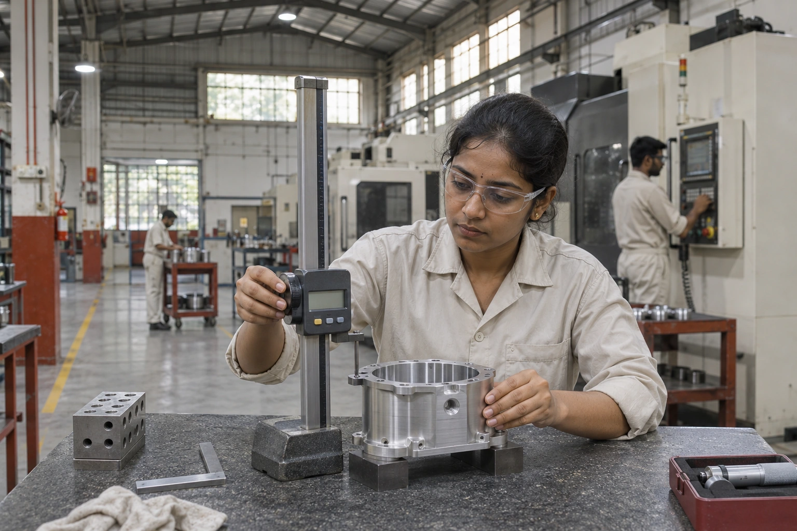
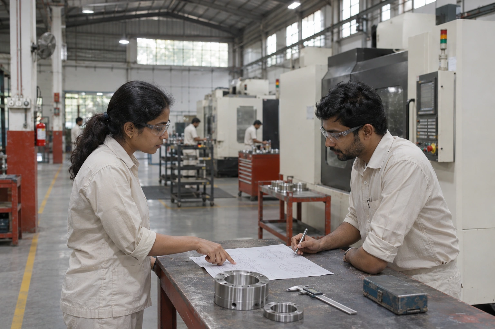

Ideas take
shape here.
Custom metal components.
Made around your next big thing.
A small part.
A bigger purpose.
Behind every product that works, there are parts that have to work together.
We bring machining, fabrication and assembly into one considered manufacturing conversation. Your application shapes the process. Your drawing defines the details.
Let’s talk about your component →Capability,
with intent.
Different requirements call for different approaches. Explore a process, then share the details that matter to your component.

FORM STUDY / MACHINED HOUSING+When the details
make the difference.
Machined components shaped around your geometry, material and inspection requirements. From a first part to a repeat production requirement.
- Processes
- Milling & turning
- Material considerations
- Aluminium · steel · stainless steel
- Start with
- Drawing · quantity · application
Parts with
a purpose.
A closer look at the forms and applications behind a manufacturing brief.
3 COMPONENT APPLICATIONS
From a line.
To real life.
A clear sequence. Fewer unanswered questions.
Scroll through the making, or choose a stage.
Share the drawing revision, material, quantity and intended application. A clear brief is the first useful tool.
Made to fit
your world.

THE DETAIL IS THE WORK.Defined.
Checked.
Documented.
Quality begins with knowing what matters. Critical features, acceptance criteria and documentation belong in the conversation before production begins.
Drawing & requirement review+
Identify critical features, drawing revisions and inspection expectations before the work begins.
Material & process records+
Agree the material records, process documentation and traceability details required for your application.
In-process & final checks+
Define what is checked, when it is checked and which records accompany the finished part.
Good work starts
with good questions.
From the drawing table to the workshop floor, progress happens when the right details are understood together.

Bring the
next thing.
A drawing. A part. A question.
Start with what you know.
- Drawing revision & application
- Material & finishing needs
- Quantity & delivery requirements
- Critical features & inspection records
A few useful
answers.
Do I need a finished drawing?+
A drawing helps define the scope. If it is still developing, describe the application, approximate dimensions and questions you need help resolving.
Can I enquire about a prototype?+
Yes. Identify the development stage, quantities and likely repeat requirement so the manufacturing approach can be reviewed.
What should an RFQ include?+
Include the drawing revision, material, quantity, finishing requirements, critical features and preferred delivery date where available.
How are tolerances and inspection agreed?+
These depend on the part, process and application. Define critical dimensions and required reports rather than assuming a standard applies to every component.
How is pricing determined?+
Material, geometry, process, quantity, finishing and inspection all influence a quotation. A complete brief makes the review more useful.